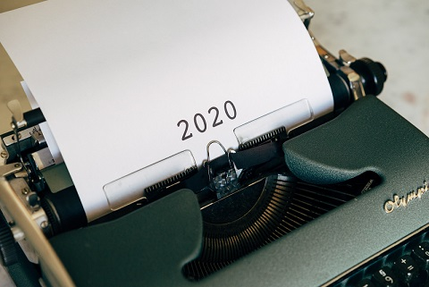
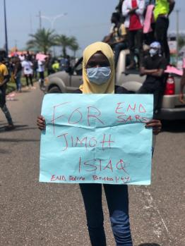
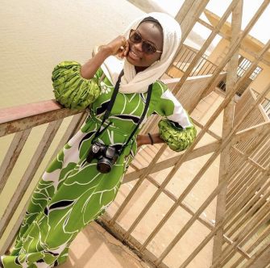
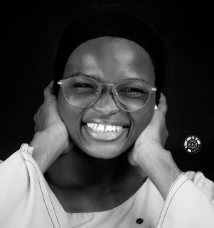
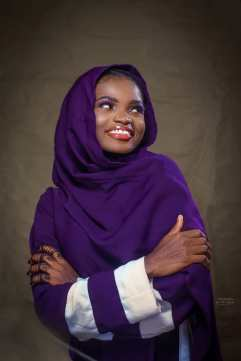
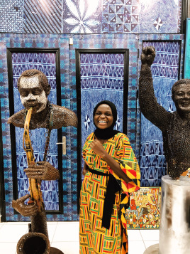

2020
In a year that had numerous incidents including the Covid -19 pandemic, the End SARS movement, black lives matter, the rise in insurgency in the north and other adverse events, it is definitely a privilege to be alive to write this blog post. This year came with many ups and downs, like who would even think Nigerians would stand up to voice out their aggressions to the government, NO! It was profound, Lol.
2020 is a personal year for me because I experienced massive growth. Yeah, I mean massive growth. I began the year with a major loss; I lost a first and ever-supportive customer, I lost him to death. To even think I saw him on the Friday and also spoke to him on the Saturday before his death. His death literally changed my perspective about things and life generally.
Then, I had this heartbreak, someone I thought I was going to spend forever with, someone I spent the last two years of my life with, same department, stays close to my hostel, we read together and did many other things together, but life happened. It was during my exams and it was one of my lowest moments this year. I had to look for ways to get over this, cut off so many friends; At that point, I realized the difference between having friends who got your back and having friends you only just talk and gist with. I lost so many friends, not to death but to life and met many amazing people who I never knew would mean much to me. The heartbreak got to me so much that I had to go on a vacation immediately after my exams to Kaduna, Lol. Later this year I still gave love another chance but it ended in what again? Tears! Looks like love and I weren’t in good terms this year, but I am a woman of love and we try again 2021.
My business; I had a major setback in my small-scale business, lost more than half a million to importation as the container I used in transporting my goods had contraband in it. It was one of my saddest moment in 2020, I thought I was gonna die, I was super depressed and devastated. It was like I was losing everything I worked for right in front of my eyes; I was so scared that I couldn’t share it with my business partner. I felt like a failure, I just wanted everything to end in the twinkle of an eye. I became aggressive and my anger issues went from 0-100. I was always having mood swings amongst many other things. I thank God for my mum, she was my support system, she did everything to make me feel good and get myself back. My friend, Pelumi too came through for me in every possible way he could; my elder brother’s impact too wouldn’t go unnoticed; Mentally Aware Nigeria Initiative (MANI) and some other people I wouldn’t want to mention their names here.
2020 was a tough one for me and also a silver lining, I stopped being that girl who was always dependent on another person to do things and make significant decisions for her to that girl who just wants to live life, take risks, have fun, live each day one step at a time and worship my Lord as without Him I wouldn’t even have made it this far. In 2020, I’ve learnt to always put myself first (you can call it selfish) but I’ve learnt to always do things for me and my mantra throughout was and will always be “I matter first, they matter next”. The idea of self-love became so real to me, it felt so real too, I took so many decisions for myself this year (regretted some though) but at the end I was glad I did it all for myself. Explains why I went on so many dates and outings this year all by myself.
If you ask me about 2020, I’d say 2020 is the year I had my biggest wins and took my biggest “L”, got in the second stage of the Tony Elumelu Foundation funds (even though it was later scrapped due to the pandemic), opened my laundry store, was one of the selected winners for the “Union Rise Challenge”, won myself a startup gift from “Sponsor a Dream”, started my travel blog and vlog, became a certified Social Media Marketer, acquired new skills and lastly, learnt video editing as an additional skill. All these I wouldn’t have imagined achieving at the beginning of this year or even during the pandemic, for which I still give all thanks to Almighty God.
In a year that came with so many popular slangs like “omo”,” soro soke”,” on God”, “opor”, “gbe body”, “indaboski”, “e be things” and so many other funny slangs, I’m glad I was able to soro soke and gbe my body. Since this is a travel blog, I’d be dropping a list of places I went to this year as I’ll be writing on most of these places come 2021.
Places I visited this year;
- Elegushi beach
- Nike art gallery
- Agodi gardens in Ibadan
- Ikogosi/Arinta waterfall
- Kaduna/Zaria
- 80% of the popular restaurants in Ilorin city (the remaining 20% for the ones I’ve not even heard of).
Thanks for reading.
I remain yours in love Aisha Adebimpe BANKOLE.
Love, Light and Amala.
